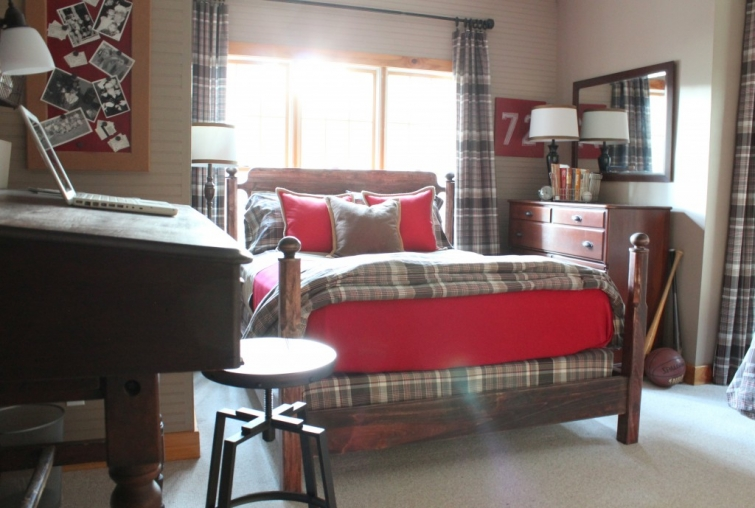
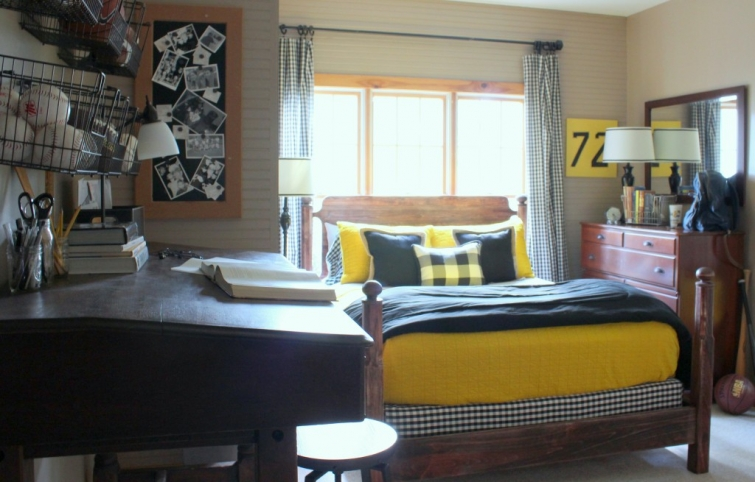

.png)
.PNG)
.PNG)
.PNG)
.PNG)
.PNG)
.JPG)
.JPG)
.PNG)
.PNG)



Now many of you are going to say you like this version better than what it currently looks like, and if you have been around here any time at all, you may say…What? Kelly got rid of red??? ¬†Yes, I really did…and there were two reasons for it. ¬†First, it just seemed too brown…a lot of brown wood furniture and all that brown plaid, brown… brown… brown, and secondly, every single bedroom here has red. That was just too much. ¬†So here is the latest with some old drapes I recycled back in there. (That¬†yellow color and that room are very hard to photograph, so you really can’t see the true color very well. üôÅ )
I painted yellow over the bright red in the bookcases.
 ¬†I redid the sports number picture of our son’s football number by the dresser in yellow as well.
¬†I redid the sports number picture of our son’s football number by the dresser in yellow as well.
And I painted over the board by the antique postmaster’s desk changing it from red to black. (There’s quite enough yellow in the room now. üôÇ )
When we last looked at this room, my husband had finished making only one of the beds.
Now there are two, and that brings us to the point of this whole post – the place for the gallery wall. üôÇ (Aren’t you glad I got you all caught up with everything?!) ¬†Here is the other bed all dressed in yellow and black.
My plans are to do a gallery wall over the headboard here. ¬†The room has kind of a sporty/collegiate vibe so I have some things I want to include in it…college pictures, graduation photos, diploma, etc. ¬†And if possible, I think I also want to use a basket or two like the ones over the desk to tie the two wall groupings together. Not 100% sure of that yet.
Even though both our sons recently moved to the Seattle area, I still consider this to be their room. ¬†So I am a little perplexed about including the collegiate things belonging to only one of our sons in the gallery wall (the one whose bed it is going above.) ¬†There is another empty wall beside our other son’s bed….
It is a good size, but, as you can see in the photograph, it is beside the desk with the arrangement of baskets on the wall.
And to the left of the desk is this…
So I am afraid to add anything else to that wall because I am afraid that it will be too busy.  Your eyes need some place to rest in a room (and that yellow color is quite enough on your eyes!)  What do you think? Way too much for the room?  My other idea is to utilize the entire corner of the space around the bed that is going to have the gallery wall, and mix in belongings from both of the boys. Or will that also be too busy for the room?
I know we shared inspirational ideas for gallery walls last week, but I have specifically been looking at corner galleries this week to see if they can help me with this. Here are a few  (and the first one has really good tips for how to hang one.)  I like the letter included in this one.
More letters included here.
And this one has the black and white photographs mixed with other art.
¬†I would love your advice on which option to choose for the art display…1 wall or 2 walls? 1 side or a corner? ¬†I plan on utilizing the paper-cut-to the-right-size-and-shape-taped-to-the-wall to help with the arrangement on it so that I don’t put any more nails in it than I have to.
Hope you are enjoying reading about all our gallery wall projects this month. ¬†(I don’t know how in the world I was invited to be in this very talented group of decorator/designers, but I am so happy and humbled to be a part of it! üôÇ ) ¬†Go catch up on everyone’s plans by clicking on their links below (after the project badge.)
Thank you so much for reading and visiting the other blogs today, and don’t forget our big reveal will be next Monday – Oct 20! And I would love to hear your thoughts about which wall(s) to use for our gallery wall. üôÇ
Until next time.


.PNG)
I was just wondering where you purchased the wall baskets above the desk?
——————————————————————-
Karrin, they were purchased at Target – on the bathroom accessory aisle. Unfortunately, I have not seen any exactly like them there recently. They do have some similar ones though, and I have also seen similar ones on the same aisle in Walmart.
Kelly
Kelly,
The room is beautiful! I loved the before too, but the yellow looks amazing! I adore the black and white checked drapes too. I think whatever you decide…is going to be perfect. I do love the idea of a corner gallery wall, especially after seeing your examples. I was just reading your posts on your house design. So interesting.
annie
———————————————————————-
Thank you Annie! I am addicted to checks, and black and white plays so well with other colors. Love your vote of confidence! Looking forward to seeing your finished gallery wall. üôÇ
Kelly
Not any design advice here, you don’t need that:). I’m just sending a warm hug your way. First your sons and now the daughter…. that’s a lot to handle in a year! Moving to college is one thiing, but moving on to their own lives is another. I’ve been there, done that 3 times and will say that the empty house does get easiier. They were born to fly! Best wishes to them all!
——————————————————————–
Vicki, how sweet of you to think of that. üôÇ Daughter’s move to Florida will only be for 5 to 7 months – depending on if she is burnt out after 5 at Disney. She has not finished college and is taking the semester away from it to work as part of an internship (required for graduation with a business degree.) But it IS like she is moving away because she has been less than an hour away from us at college and will now be almost 6 hours away from us then and will probably come home only once in the time she is working there. Glad to know the empty house gets easier!
Kelly
Where is start? That is the question isn’t it? Well…Since you are taping up paper, you could gave all your ideas a try. After you get them up, take a picture, then pick which one you like best. If I were doing two walls, I would start in the corner and work my way out, trying to give balance to each side. I love the idea of adding something other than just photos. Letters, a clock, a collage of game tickets (since you are going collegiate.)Maybe even a jersey?
Can’t wait to see what you come up with!
———————————————————————–
What a super idea Jayne!!! I am going to take your advice and do that (and my husband will especially appreciate my not having to make so many nail holes in the wall to try it out! LOL)
Kelly
First of all: you are brave to open yourself to the comments and whims of your readers. Second: whatever you do it will be first rate. I find your decor leans to my personal taste, so I’m sure I’ll like whatever. My comments: I, too, love books, but I might be of a mind to pare down the number you have on display and use the shelves for sports memorabilia, etc. (a glass jar of baseballs..Ha!) All the different colored bindings makes my eyes ‘nervous.’ Agree with the gallery wall over the bed but PLEASE for all that is good, no animal horns. I fear that design trick has been overworked (who was the originator of that design…anyone?) Reiterating: you are the decorator, it’s your home, we’ll all Oooo and Ahhh when it’s done. üôÇ
———————————————————————-
Oh I think it is interesting to read everyone’s suggestions, and they have actually helped me think out what I want to do here. üôÇ I am afraid I can’t pare down the number of books. We are overflowing everywhere, and the cabinets below the shelves are FULL of books…as are the bookshelves in the family room, cabinets in the family room, lower cabinets in daughter’s desk, dining room cabinets, and open table spaces in the family room. Too many! I gave away some a couple of weeks ago, but the ones in the boys’ room belong to the boys and until they move some out (which they did not take to their tiny studio apartment in Seattle), they will have to be housed there. üôÅ You don’t have to worry about animal horns though…I don’t have any to use here anywhere. üôÇ (Good thing their college mascots didn’t have horns! LOL)
Kelly
Hi~ While I love the IDEA of a gallery wall that wraps the corner I don’t know if it would be right in this room. I think it might seem “busy” being as there is another corner close by that also has its own thing going on. If the wall were long and straight and unbroken then I think it would work better..but that is just my thoughts. I really like the baskets over the desk. I like the symmetry of it. It had a neat, clean, almost industrial look.
I like the idea of the gallery on the one wall…but no matter what you do you will do it beautifully.
Love the color combination, too, with the black and yellow…and WHAT..not a HINT of red?
Hope you have a GREAT week. xo Diana
———————————————————————-
I agree with you Diana. Those walls in there could easily be too busy…definitely what I am trying to avoid. So glad you liked the yellow and black together. No hint of red anywhere. Quite a departure for me!
Hope you have had a great week as well.
Kelly
Kelly,
I personally like the idea of the corner gallery. Having 2 sons, I think it would feel like you left one out if only one son gets the college related images above his bed. Unless they both went to the same college. In any case, I for one, love the black and yellow touches.
üôÇ
Karen
———————————————————————–
I agree it needs to be a mix of things from both sons. It just doesn’t feel right to leave one out. So somehow I have got to work in a good number of items on this wall. Glad you like the color combination!
Kelly
Kelly,
I like it all so far. I agree that the wall by the desk should stay blank. I like the idea of a corner gallery wall over by the other bed. I think the gallery wall should include a basket like above the desk, some black and white prints/photographs and some initial letters. I am sure that whatever you come up with will look wonderful. You all do such a nice of job decorating with meaning. Thanks for sharing!
————————————————————————
Dawn, you and I are definitely on the same page for this “creation.” LOL
Kelly
I am a fan of the yellow! As far as the gallery wall goes…I trust your judgement because you can see the whole space but I am leaning towards just over the bed…..Look forward to seeing what you decide!
———————————————————————–
Yay for another yellow fan! (My wardrobe seems to be sporting a lot of that color too lately.) Looking forward to finishing the wall and seeing everyone else’s creations on Monday.
Kelly
I guess my idea is different from the other suggestions, but I don’t really like the idea of a corner gallery. I would do just the area over the bed, and then probably rework that area where the baskets are hanging over the postmaster’s desk. (Love that BTW — my Daddy was a postmaster!). The baskets could be incorporated into the mix or possibly they could be hung in a vertical stack where that pinboard is. Just a thought.
I like the colors — black and white and yellow always works. Did you say your husband made those beds? I need to borrow him!
———————————————————————–
You have some good ideas here too! If your daddy was a postmaster, you need this desk. üôÇ (Wish I had the cubbie unit that went above it as well.) Glad you like the colors. Yes, my husband did make the beds. He is such a perfectionist, and it took him a looong time to finish them.
Kelly
Kelly you have such fabulous taste, I just want to see what you decide. I know it will be wonderful because I’m loving your inspiration photos, especially the letters. This whole room is a great mix of classic with a refreshing young vibe.
———————————————————————-
Thank you Leslie! I just want to see what I decide too! LOL Tooooo much inspiration leads to indecision here!! I am looking forward to your finished project as well. üôÇ
Kelly
I think I like what Sandy suggested- the one wall and side wall and a mixture of both boy’s special items. I do love the red and brown but think the yellow really perks it up! By doing the boy’s room I know it is helping with the “empty nest” and preparing for the times they will be returning for family visits. Can’t wait to see what you come up with because I love The KellyGal touch!
————————————————————————
I really think it should be a mixture of their things…not just one son’s. So I am trying to work all of that out in my brain right now. üôÇ Thank you for the compliments on the decorating Louvina!
Kelly
Personally I do what I know I want to do and in your case it is the large wall above the bed and then look at everything to see if you want to do that corner.
———————————————————————–
That seems like a very smart way to approach it Cheri! Will do. üôÇ
Kelly
kelly, love the yellow, so fresh!
the whole room is inviting…….lucky sons when they come home. my vote is for the corner effect & i cannot wait to see what you do. very talented you are!
debra
———————————————————————–
Glad you like all the yellow Debra! It brightened up the room quite a bit. Another vote for the corner. üôÇ
Kelly
I just cannot tell you how special you have made that room all ready. It seems like a warm hug to envelope your boys when they come home. My son is in Florida and we are in California…his room is also our guest room but I do have his photos and sports memorabilia in there. Love the idea of initials.
———————————————————————–
Oh dear…your son is far from your home as well. Our daughter will be moving to Florida in January (to work at Disney!) I am glad you like the initials in the gallery wall – hope I can figure out a way to make all of this work!
Kelly
I knew you would come up with something extremely clever and put the rest of us to shame!! I cannot wait to see this. I love the gallery wall with baskets as well!! Soooo glad you joined us you are amazing!!
———————————————————————
“Put the rest of us to shame”? Um…who is it that has not one, but TWO gallery walls? And who was the brilliant one that came up with this glorious idea? Um…I believe it was you girl. üôÇ So it is really YOU that is the amazing one! (But I am glad you like what’s going on in the boys’ room.)
Kelly
I’m so in love with this room already – love the colors that you used and the wire baskets with the sports equipment are so great! Looking forward to seeing which walls you decide to tackle – it will look fabulous whatever you decide!
———————————————————————
Your comments are so kind Kris. Thank you for the compliments on the room and the vote of confidence for the gallery wall! I hope you are right. üôÇ
Kelly
I LOVE whatever you do but I thought I would give you my suggestions. I looked over the other blogs and the gallery walls are definitely statements. BE BOLD AND BLOOM! Have you considered taking down the baskets and the black board and putting your gallery wall over the desk and down the wall where the board is hanging. Take your son’s # and put it in the bookcase or use it in the gallery. Definitely use the baskets, or at least one basket, in the gallery. Ditch the board and keep the focus on the gallery. If the project is a gallery you want all eyes on the gallery. By the way, the yellow is terrific especially with the black.
Cannot wait to see the finished project!!
———————————————————————
Lots of good ideas here Susan! Thank you. I am pondering on them.
Kelly
I’m contemplating your dilemma – just love the room and can’t wait to see what you decide. Adore the combination of the yellow and black in his room!!
——————————————————————–
Contemplate all you want! üôÇ I am contemplating changing my original plan….got to make a final decision! Glad you liked the color combination. üôÇ
Kelly
I’m not a huge yellow fan, but I love it in this room especially with the black and white checks. Super cute and can’t wait to see that gallery wall.
———————————————————————
Thank you Kim. I do like a bit of yellow with the black and white checks.(Of course, this is more than a “bit.” LOL)
Kelly
Well all I can say is GO TECH!! Looks like a Georgia Tech room now instead of a GEORGIA room!:) I leave the decision making up to you…you have great taste!!
———————————————————————–
Amen on the Tech room! We have been long time Tech fans – since I was in high school back in the dark ages. I even turned down a scholarship from there. (NOT a good decision on my part.) Thank you for your vote of confidence!
Kelly
Hi Kelly! I love the updates you’ve made to your boys’ room. I really like the yellow! I think I would stick with the one larger wall or the corner idea. Or if you decide to use the smaller wall as well, keep it super simple with just a couple items. I really like the idea of mixing different media for the gallery wall too. I look forward to seeing how it turns out!
————————————————————————
Glad you like it Jill! Super simple – I think I can handle that. LOL I look forward to getting it finished!
Kelly
Kelly, my preference for the gallery wall would be the corner over the bed and to the left wall. Using your black and white photos, large initials of both sons, their sport(s) pictures, maybe a word or phrase that was used very often by one or both sons in a frame. You will work your magic and the room will be pleasing to your readers. I love the way you decorate and you have inspired me to refresh my home. Thank you.
——————————————————————
Thank you for sharing your ideas Sandy. I like the “word or phrase” suggestion…may have to incorporate that somehow. üôÇ And thank you for your kind words about the house. I hope I can get this wall finished on time for the post!
Kelly
I like the letters in the inspiration photos. Why not just do your wall above the bed with the documents and pics and one or two baskets as you had planned and then on two small walls that are currently empty do one large initial for each of your son’s first names? That way the walls wouldn’t be completely blank but they wouldn’t be too full either, leaving some breathing room in there. Personally I don’t love the yellow, too bright for me but using the black and white gives you the option of changing some of the accessories to other colors whenever the mood strikes…pale blue, meadow green, even orange. Love how the beds turned out.
———————————————————————-
The walls definitely need some breathing room. I had planned to use bright blue for the quilts and shams in there but could never find any in the shade of blue I wanted (nor the price I was willing to pay.) So when I found the yellow on sale, I went with it. It is Georgia Tech colors, and we are fans of Tech, so the yellow works for that. I also like how the black and white gives me options for change like you mentioned- perhaps red again at Christmas. üôÇ
Kelly
Hi Kelly, First of all, I love your style so whatever you do will look great! I would just do the one wall that’s blank and that’s all. There’s a lot going on in the room already. Yes, I love the yellow! I’m glad to see the black and white back too!
———————————————————————
Thanks for your input Anne! Yes there is a lot going on in that room, so whatever I do probably needs to be somewhat simple.
Kelly